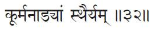
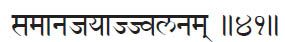
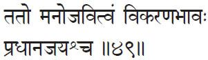
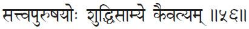

Book Three
Vibhūti Pāda
Portion on Accomplishments
This third book is called the Vibhūti Pāda. The vibhūti are all the accomplishments which come as by-products of your Yoga practice. They are also sometimes called the siddhis, or supernatural powers. These powers begin to come with the practice of the final three limbs of Rāja Yoga: dhāraṇā (concentration), dhyāna (meditation) and samādhi (contemplation).
Note on Books Three and Four:
I have translated all the sūtras of Books Three and Four; however, I have chosen not to comment on them all. I have taken the ones I have found most useful for the understanding of Yoga aspirants and have left out the others. Those readers who wish to study more about the sūtras that have no commentaries here, can consult one of the books on the Yoga Sūtras listed in the Selected Reading.
1. Deśabandhaścittasya dhāraṇā.
Deśa = place, location; bandhḥ = binding; cittasya = of the mind; dhāraṇā = concentration.
Dhāraṇā is the binding of the mind to one place, object or idea.
When the cittam, or sum-total of the mind, is being bound by one thing or bound in one place, it is in dhāraṇā. In other words, in dhāraṇā you are training the mind. It is the beginning of meditation. Concentration is the beginning of meditation; meditation is the culmination of concentration. They are more or less inseparable.
Normally, we see our mind running here and there. When we try to fix it on one thing, within a fraction of a second we see it somewhere else.
Imagine you just want to fix the mind on a beautiful rose. The best practice would be to keep a physical rose in front of you as you begin, because it’s easier for the mind. Concrete objects, symbols or images are very helpful for our beginning practice. It’s not that easy for the mind to grasp something abstract or even to visualize something. So, keep a rose or a flame or a picture in front of you.
If it is an idea on which you wish to concentrate, at least have something physical to remind you of that. While you look at this object, think of the idea connected with it. This is where the practice of trādak, or gazing, also comes in handy.
Trādak is actually gazing at something, sometimes without even blinking. Don’t strain the eyes. Just look at your object as long as you can. You’ll be able to look longer if you put your mind on the idea behind the object: how beautiful it is, what a great gift has come from a thorny bush, etc. Like that, associated ideas will come in. When you get involved in those things, even the gaze will be forgotten; but you will still be gazing without blinking. Don’t try to gaze just for the purpose of gazing; if you do that the eyes will get tired quickly.
After a while, you can gently close the eyes and try to bring a mental picture of your object of concentration. First it is outside; then you try to bring it within the mind. It might come for a while, and then you lose it. Again, open the eyes. Slowly learn to grasp it within the mind alone. That means you will be developing that impression in your mind. It is something like in photography: you take a picture; it’s there on the film. How do you know whether it’s there or not? You develop it. If nothing comes, you have to make another picture. It is the same with the practice of trādak.
As you think, so you become. If you think of the rose, the mind will take the form of the rose. After a while, you will easily be able to see it within, without the aid of any physical object outside. At that stage you no longer need altars and this and that.
Even in your pūjā (worship service) this is what is supposed to be done. You do the pūjā physically and then sit back and try to bring the whole picture in your mind. How did you begin the pūjā? What did you do next, next, next? Bring the whole procedure to mind in the proper sequence. Once it becomes easy, you don’t even need the physical objects or pūjā anymore.
All this is part of dhāraṇā. As you look at the rose, the mind will try to go somewhere. The minute you begin, the mind will say, “Ah, yes, I remember, she sent me a rose like that for my last birthday.” See? Then the rose is gone from your mind; she is there. And then, “After that we had dinner. Ah, it was the best dinner. Then we went to the movies. What was that movie? King Kong?” It will all happen within two minutes. From the rose to King Kong in two minutes. Even less than two minutes. So, on what are you meditating now? Not on a rose, but on King Kong.
The mind is like that. But it doesn’t matter. That’s the nature of the mind. There’s no point in getting frustrated. At least at that point, say, “God, where am I? How far have I come from the rose to King Kong? Shame on you, my little fellow; come on, let’s go back to the rose.”
Never give up. And never think, “Oh, I am unfit for meditation.” That is the biggest mistake many people make. They think that the minute they sit and close their eyes everything should be beautiful. If the mind runs here and there they say, “Meditation is not my thing.” But it’s like practicing piano or playing guitar or cooking. How many times have you cooked your fingers instead of the vegetables? Nothing is learned that easily. While learning to bicycle, how many times did you fall down? So, keep trying. Persevere. Remember what Patañjali says in Book 1, sūtra 14: “Practice becomes firmly grounded when well attended to for a long time, without break and in all earnestness.”
This very practice itself is called concentration: the mind running, your bringing it back; its running, your bringing it back. You are taming a monkey. Once it’s tamed, it will just listen to you. You will be able to say, “Okay, sit there quietly.” And it will. At that point you are meditating. Until then you are training yourself to meditate. Training your mind to meditate is what is called dhāraṇā.
2. Tatra pratyayaikatānatā dhyānam.
Tatra = therein; pratyaya = cognition; eka = one, single; tānatā = continued flow; dhyānam = meditation.
Dhyāna is the continuous flow of cognition toward that object.
The Hindu scriptures give a beautiful example of this “continuous flow.” They say it is like pouring oil from one pot into another. It is a continuous string; it doesn’t break. The mind is fixed. Communication between meditator and object of meditation is steady. That’s what is called dhyāna. Normally, what we are doing when we say we are meditating is dhāraṇā. After long practice of dhāraṇā, gradually the “flow of cognition” gets a little longer and it becomes dhyāna.
When would you know that you have really meditated? There are some signs for that. Say you come and sit for meditation at 4:30. Meditation is assigned for an hour. The bell rings at 5:30. If you feel, “What, who rang the bell this soon? I just sat down five minutes ago,” then you may have been meditating. But when you feel five minutes as one hour, you are not meditating; you are still concentrating.
Time has no meaning in meditation and space also is lost. You don’t know where you are. If you break that meditation all of a sudden, you may wonder, “What happened to my body?” Even the body is forgotten in real meditation. You are above time and space; you are out of the body. When I say “out of the body,” don’t think I mean that you are traveling in space or anything like that. I mean, the mind transcends body consciousness.
In this sense, meditation is similar to sleep. You don’t know you have a body. Even though you still have it, you don’t know it. If your sleep is really deep and someone comes and takes your body somewhere else, you don’t even know. When you wake up, you will say, “I was sleeping on the couch; who brought me to the bed?”
There are other signs of meditation also. In the beginning you feel so light when you transcend the body. Sometimes you get beautiful visions connected with the object of your meditation—or sometimes not connected, but still something beautiful and elevating. Sometimes you won’t see visions. You will simply see beautiful light; you will seem to be bathed in beautiful moonlight. Or sometimes you may just hear beautiful sounds like the roaring of the ocean, the sound of a gong or the beautiful notes of a flute. These are all various signs you may come across. Normally, I don’t say these things much because once you hear that, you may imagine it is happening to you. Instead, it should just happen.
3. Tad evārthamātra nirbhāsam svarūpa śūnyam iva samādhiḥ.
Tad = that [meditation]; eva = indeed; artha = object, objective; mātra = alone, only; nirbhāsam = shining forth, illuminating; svarūpa = its own form; śūnyam = devoid, empty; iva = as if; samādhiḥ = contemplation, profound absorption, bringing into harmony.
Samādhi is the same meditation when there is the shining of the object alone, as if devoid of form.
There is not much I can say about this one. You will easily understand when you have a little experience. Meditation culminates in the state of samādhi. It’s not that you practice samādhi. Nobody can consciously practice samādhi. Our effort is there only up to meditation. You put all your effort in dhāraṇā. It becomes effortless in dhyāna, and you are just there, knowing that you are in meditation.
But in samādhi, you don’t even know that. You are not there to know it because you are that. You think first with a lot of interruptions; that is dhāranā. Then when you become what you think, that is samādhi. In meditation you have three things: meditator, the meditation and the object meditated upon. In samādhi there is neither the object or the meditator. There is no feeling of “I am meditating on that.”
To give a scientific analogy, if you keep on adding drops of an alkaline solution to an acid, at one point the solution becomes alkaline. At that point you are simply adding alkali to alkali; there’s no more acid there. The giver and receiver become one. Earlier, the receiver was an “acid-head,” and the giver was alkali. As you add the alkali, drop by drop, and, keep testing it with your litmus paper, at one point, all of a sudden you notice you are no longer an acid-head! Who are you? The same alkali as God. You and God become one. That’s samādhi.
It’s rather difficult to put it in words. If you just keep working, you will know what samādhi is. Of course, there are different lower samādhis, as we talked about in the first book, where you attain that level and then come back. These are samādhis connected with form, with idea, with bliss and with pure ego (savitarka, savicāra, sa-ānanda and sa-asmita samādhi). All these four still leave some parts of the mind with hidden desires. You are not completely free. The ideas in the mind are not completely roasted. They could still germinate again. That’s why all these four are called sabīja samādhi. Bīja means seed. They are with seed. Don’t think you are all clean and everything is okay. As long as the seed is in the bag it seems to be innocent. But the minute you take one seed out, dig a little hole, put it in and pour a little water, then up it comes again. The sprouting tendency is still there.
As long as you have that tendency, you are still in the sabīja or savikalpa samādhi. But once you get completely roasted, even that germinating capacity goes away. The seeds are still there. In all external appearance they are the same. But, even if they are put into holes and watered they won’t germinate.
What does this mean? All the thoughts, all the desires, become selfless. Selfishness is the germ that sprouts, saying, “I want it!” When the selfishness is completely taken out, you become germless. That is called nirbīja samādhi or nirvikalpa samādhi.
One who has achieved this may look similar to anyone else. But the burnt nature of his or her mental seeds is the difference between ordinary people and the jīvanmuktas (liberated beings). They also eat, sleep and do everything like everybody else. They may be doing anything, but they are not affected by what they do. There is no moisture of attachment to cause sprouting. They are living liberated people. Liberation is not something you experience when you die. While living, you should be liberated. Jīvanmukta: mukta means liberated, jīvan, while living.
That is the final state of samādhi. It is not sitting stiffly with eyes closed, as some people think. If sitting like a statue is what you call samādhi, all the rocks in the garden must be in deep samādhi. No. You will be useful; you will be active—more active than other people. Your actions are more perfect than other people’s. You are dynamic, but you look static.
Opposites meet; extremes look alike. A top that is not rotating is motionless. The same top at its highest velocity also looks motionless. Lack of light is darkness. Keep on increasing the light, you get blinded by the light and feel you are in darkness again. A totally sattvic person appears to be very quiet; a totally tamasic one is also quiet.
4. Trayam ekatra saṁyamḥ.
Trayam = consisting of three; ekatra = upon one;
saṁyamḥ = quintessential concentration of mind.
The practice of these three [dhāraṇā, dhyāna and samādhi] upon one object is called saṁyamḥ.
From this practice, come the siddhis. You dive deeply into an object or idea, and it releases its secrets. In a way, scientists have done saṁyama on the atomic particles. The particles released their energy, and the scientists got the knowledge of them. They accomplished the truth behind the particles. Saṁyama is usually done on objects or ideas connected with some results. When the results come, you call them siddhis or vibhūti.
5. Tajjayāt prajñālokḥ.
Tat = that; jayāt = from its mastery;
prajñā = true or transcendental knowledge;
ālokḥ = glimmer, lustre, light, beholding.
By the mastery of saṁyama comes the light of knowledge.
This means that the truth behind the object on which we do saṁyama becomes known to us. That is what we call discovery. The truth was “covered” before; now we “discover” it. It’s not that anyone creates anything new. Some truth was hidden. By saṁyama, we understood what it was. That’s the true meaning of discovery.
6. Tasya bhūmiṣu viniyogḥ.
Tasya = its; bhūmiṣu = in stages;
viniyogḥ = employment, application (practice).
Its practice is to be accomplished in stages.
7. Trayam antaraṅgam pūrvebhyḥ.
Trayam = triad, the three together; antar = internal, interior;
aṅgam = limb, part; pūrvebhyḥ = from those preceding.
These three [dhāraṇā, dhyāna and samādhi] are more internal than the preceding five limbs.
In Aṣṭāṅga Yoga, dhāraṇā, dhyāna and samādhi are the more antaraṅga, or inner practices. Even to practice yama and niyama, you need the outside world. How will you practice non-injury if there is nothing outside to injure? How to deal with the outside world is taught through yama and niyama. Even your body is an outside world for you, so in āsana you do something with your body; in prāṇāyāma you do something with your prāṇa; in pratyāhāra you do something with your senses. But dhāraṇā, dhyāna and samādhi are totally inward. They are on the mental level. That is what Patañjali means by saying these three are more inner than the preceding five.
8. Tad api bahiraṅgam nirbījasya.
Tad = these; api = even; bahir = external, exterior;
aṅgam = limb, part; nirbījasya = of the seedless.
Even these three are external to the seedless samādhi.
When these three are compared with the preceding five steps, they are more internal. But when they are compared with nirbīja samādhi, they become external and gross.
9. Vyutthāna nirodha saṁskārayor abhibhava prādurbhāvau nirodha kṣaṇa cittānvayo nirodha pariṇāmḥ.
Vyutthāna = rising up, awakening; nirodha = suppressive, checked;
saṁskārayoḥ = of the two impressions;
abhibhava = disappear; prāduḥ = arising;
bhāvau = appear; nirodha = suppression, checked;
kṣaṇa = moment; citta = mind; anvayḥ = conjunction;
nirodha = suppression, checked;
pariṇāmḥ = transformation, development.
The impressions which normally arise are made to disappear by the appearance of suppressive efforts, which in turn create new mental modifications. The moment of conjunction of mind and new modifications is nirodha pariṇāmḥ.

10. Tasya praśānta vāhitā saṁskārāt.
Tasya = of that; praśānta = pacified, calm, composed;
vāhitā = flow; saṁskārāt = through habit, from training.
The flow of nirodha pariṇāmḥ becomes steady through habit.
11. Sarvārthataikāgratayoḥ kṣayodayau cittasya samādhipariṇāmḥ.
Sarva = all, everything; arthatā = object, wordliness; (sarvārthatā = distractedness, attending to everything);
ekāgratayoḥ = undisturbed attention, attending to one thing (of both of these); kṣaya = declining, destruction [of the former];
udayau = appearance [of the latter]; cittasya = of the mind;
samādhi = absorption, harmony;
pariṇāmḥ = development, maturity.
When there is a decline in distractedness and appearance of one-pointedness, then comes samādhiḥ pariṇāmḥ (development in samādhi).
12. Śāntoditau tulyapratyayau cittasyaikāgratā pariṇāmḥ.
Śānta = quieted, subsiding, past [śānti, pacified];
uditau = rising, present (these both); tulya = equal, identical;
pratyayau = both adjacent concepts, both adjacent ideas;
cittasya = of the mind;
ekāgratā = one pointed undisturbed attention;
pariṇāmḥ = transformation, development, maturity.
Then again when the subsiding past and rising present images are identical, there is ekāgratā pariṇāmḥ (one pointedness).
13. Etena bhūtendriyeṣu dharma lakṣaṇāvasthā pariṇāmā vyākhyātāḥ.
Etena = by this; bhūta = in the elements;
indriyeṣu = and in the senses (all elements and senses);
dharma = established visible characteristics;
lakṣanḥ = mark, indicated invisible characteristic indirectly expressed due to time differences;
avasthā = condition, state;
pariṇāmāḥ = transformations, developments;
vyākhyātāḥ = described, explained.
By this [what has been said in the preceding three sūtras], the transformations of the visible characteristics, time factors and conditions of elements and senses are also described.
14. Śāntoditāvyapadeśya dharmānupātī dharmī.
Śānta = latent past, quieted; udita = uprisen present;
avyapadeśya = unmanifested, indescribable;
dharma = nature, essential quality; anupātī = following through;
dharmī = substratum.
It is the substratum (Prakṛti) that by nature goes through latent, uprising and unmanifested phases.
15. Kramānyatvam pariṇāmānyatve hetuḥ.
Krama = step, succession; anyatvam = different phases, otherness;
pariṇāma = evolution, transformation, development;
anyatve = in the differences, in the otherness; hetuḥ = cause.
The succession of these different phases is the cause of the differences in stages of evolution.
16. Pariṇāma traya saṁyamād atītānāgata jñānam.
Pariṇāma = change, transformation, moving from one stage of evolution to another; traya = threefold, triad;
samyamāt = from saṁyama on; atīta = past;
anāgata = future; jñānam = knowledge.
By practicing saṁyama on the three stages of evolution comes knowledge of past and future.
In this and in the following sūtras, Patañjali describes various saṁyamas and the siddhis which will result.
17. Śabdārtha pratyayānām itaretarādhyāsāt saṁkarastatpravibhāga saṁyamāt sarva bhūta ruta jñānaṁ.
Śabda = sound, word; artha = meaning, purpose;
pratyayānām = presented ideas, thought;
itaretara = one with another [itara-itara = the other-another];
adhyāsāt = from superimposition;
saṁkarḥ = mixed up [with each other], confused together;
tat = their; pravibhāga = distinction;
saṁyamāt = from saṁyama on; sarva = all;
bhūta = any living being (divine, human, animal, vegetal);
ruta = any cry or noise; jñānam = knowledge.
A word, its meaning and the idea behing it are normally confused because of superimposition upon one another. By saṁyama on the word [or sound] produced by any being, knowledge of its meaning is obtained.
18. Saṁskārasākṣātkaraṇāt pūrvajātijñānaṁ.
Saṁskāra = activator impression [the mind];
sākṣat = from direct perception;
karaṇāt = from intuitive [perception], from [saṁyama on], immediate cause;
pūrva = previous; jāti = birth; jñānam = knowledge.
By direct perception, through saṁyama, of one’s mental impressions, knowledge of past birth is obtained.
19. Pratyayasya paracitta jñānam.
Pratyayasya = of the thought, of belief, of the notion, of the idea, of the conviction;
para = other’s, of another; citta = field of mental images;
jñānam = knowledge.
By saṁyama on the distinguishing signs of other’s bodies, knowledge of their mental images is obtained.
20. Na ca tat sālaṁbanam tasyāviṣayī bhūtatvāt.
Na = not; ca = and; tat = that;
sālaṁbanam = together with support; tasya = its, of that;
aviṣayī = not proper object, being out of reach, without object;
bhūtatvāt = from existing nature, from beingness.
But this does not include the support in the person’s mind [such as the motive behind the thought, etc.], as that is not the object of the saṁyama.
21. Kāyarūpa saṁyamāt tadgrāhya śakti staṁbhe cakṣuḥ prakāśāsaṁprayoge’ntardhānam.
Kāya = body; rūpa = form; saṁyamat = from saṁyama on;
tad = that; grāhya = perception, grasped; śakti = power, ability;
staṁbhe = to be checked, suspended; cakṣuḥ = eye;
prakāśa = light; asaṁprayoge = upon being disconnected;
antardhānam = disappearance.
By saṁyama on the form of one’s body and by checking the power of perception by intercepting light from the eyes of the observer, the body becomes invisible.
Oh boy! Do you want to become invisible? When you want to see something, the form comes onto the retina, gets recorded and then you see the image. Until that is done, you cannot see. So, if by saṁyama on my own body, I disconnect the light that would affect your retina, no image will be formed on your retina, and you won’t see any form.
22. Etena śabdādyantardhānam uktam.
Etena = in this way; śabda = sound; adi = et cetera;
antardhānam = disappearance;
uktam = has also been spoken about [is explained].
In the same way, the disappearance of sound [and touch, taste smell, etc.] is explained.
23. Sopakramam nirupakramam ca karma tat saṁyamād aparānta jñānam ariṣṭebhyo vā.
Sopakramam = active manifestation;
nirupakramam = inactive manifestation; ca = and;
karma = latent results from past actions; tat = that;
saṁyamāt = from saṁyama on; apara = final, distant;
anta =end; (aparānta = final/distant end, death);
jñānam = knowledge;
ariṣṭebhyḥ = and the portents too (i.e. with the karmas); vā = or.
Karmas are of two kinds: quickly manifesting and slowly manifesting. By saṁyama on them, or on the portents of death, the knowledge of the time of death is obtained.
24. Maitryādiṣu balāni.
Maitri = friendliness; adiṣu = et cetera, et cetera;
balāni = strengths, powers.
By saṁyama on friendliness and other such qualities, the power to transmit them is obtained.
25. Baleṣu hasti balādīni
baleṣu = on the strengths; hasti = elephant;
bala = strengh; adīni = et cetera, et cetera.
By saṁyama on the strength of elephants and other such animals, their strength is obtained.
That means you do saṁyama on a very strong animal; for example, an elephant. It is not that the elephant will come to you, but the strength of the elephant. You acquire that strength. If you do saṁyama on the Rock of Gibraltar, you will become real rocky. That means you become so heavy. You just simply stand on the scale and weigh 110 pounds. Stand on it doing saṁyama on the Rock of Gibraltar, the scale will immediately burst. In the same way, if you do saṁyama on a feather, the scale will record only zero. You can lighten yourself; you can make yourself heavy. It’s all achieved by saṁyama. Do it; try it. Nice things will happen.
26. Pravṛttyāloka nyāsāt sūkṣma vyavahita viprakṛṣṭa jñānaṁ.
Pravṛtti = super sense faculty; āloka = inner light, perception;
nyāsāt = from directing, from projection, from sitting near;
sūkṣma = subtle; vyavahita = hidden, concealed;
viprakṛṣṭa = remote, distant; jñānam= knowledge.
By saṁyama on the Light within, the knowledge of the subtle, hidden and remote is obtained. [Note: subtle as atoms, hidden as treasure, remote as distant lands.]
27. Bhuvanajñānam sūrye saṁyamāt.
Bhuvana = universe, world; jñānam = knowledge;
sūrye = on the sun; saṁyamāt = from saṁyama.
By saṁyama on the sun, knowledge of the entire solar system is obtained.
28. Candre tārā vyūha jñānaṁ.
Candre = upon moon; tārā = star;
vyūha = arrangement; jñānam = knowledge.
By saṁyama on the moon, comes knowledge of the stars’ arrangement.
29. Dhruve tadgati jñānaṁ.
Dhruve = on the polestar; tad = their;
gati = movement, procession; jñānam = knowledge.
By saṁyama on the pole star comes knowledge of the stars’ movements.
30. Nābhicakre kāyavyūha jñānam.
Nābhi = navel; cakre = on the plexus; kāya = body;
vyūha = orderly arrangement, distribution; jñānam = knowledge.
By saṁyama on the navel plexus, knowledge of the body’s constitution is obtained.
You won’t need an x-ray. You can understand the whole body and its constitution because the solar plexus is the center of the body. It is something like saying that if you understand the sun, you understand the whole solar system.
31. Kaṇṭha kūpe kṣut pipāsā nivṛttiḥ.
kaṇṭha = throat; kūpe = on the pit; kṣut = hunger;
pipāsā = thirst; nivṛttiḥ = cessation, satisfaction.
By saṁyama on the pit of the throat, cessation of hunger and thirst is achieved.
Some of these siddhis are simple enough to attain if anybody wants to try. Patañjali gives this nice, simple one that will make the one who cooks very happy! Put your entire attention on the pit of the throat and you don’t need to visit the kitchen. All these examples are given mainly to test yourself. They don’t take that long to achieve.

32. Kūrmanāḍyām sthairyaṁ.
Kūrma = tortoise; nāḍyām = subtle channel, tube;
sthairyam = stability, motionlessness.
By saṁyama on the kurma nadī (a subtle tortoise-shaped tube located below the throat), motionlessness in meditative posture is achieved.
33. Mūrdha jyotiṣi siddha darśanaṁ.
Mūrdha = crown of head; jyotiṣi = on the light;
siddha = masters and adepts; darśanam = vision, seeing.
By saṁyama on the light at the crown of the head (sahasrara chakra), visions of masters and adepts are obtained.
34. Prātibhād vā sarvaṁ.
Prātibhād = spontaneous intuitive light-flash, luster, illumination, pure presence of mind;
vā = or; sarvam = everything, all.
Or, in the knowledge that dawns by spontaneous enlightenment [through a life of purity], all the powers come by themselves.
35. Hṛdaye citta saṁvit.
Hṛdaye = on the heart; citta = mind-stuff;
saṁvit = knowledge, understanding.
By saṁyama on the heart, the knowledge of the mind-stuff is obtained.
36. Sattva puruṣayor atyantāsaṁkīrṇayoḥ pratyayāviśeṣo bhogḥ parārthāt svārthasaṁyamāt puruṣajñānaṁ.
Sattva = of the buddhi (intellect), of the mind;
puruṣayoḥ = Self (of these both);
atyanta = completely different, all the way to the end different;
asaṁkīrṇayoḥ = (and) not mixed together (sattva & puruṣayoḥ);
pratyaya = cognition, thought;
aviśeṣḥ = without distinction (of these both);
bhogḥ = experience; para = another;
arthāt = from the interest, from the purpose;
sva = Self; artha = interest, purpose; saṁyamāt = from saṁyama;
Puruṣa = Self; jñānam = knowledge.
The intellect and the Puruṣa (Ātman, Self) are totally different, the intellect existing for the sake of the Puruṣa, while the Puruṣa exists for its own sake. Not distinguishing this is the cause of all experiences; and by saṁyama on the distinction, knowledge of the Puruṣa is gained.
37. Tatḥ prātibha śrāvaṇa vedanādarśāsvāda vārtā jāyante.
Tatḥ = thence; prātibha = spontaneous, illuminated, divine, intuitive and extraordinary; śrāvaṇa = hearing (clairaudience);
vedana = touch; adarśa = seeing (clairvoyance); āsvāda = taste;
vārtā = smell; jāyante = are born, arises.
From this knowledge arises superphysical hearing, touching, seeing, tasting and smelling through spontaneous intuition.
38. Te samādhāvupasargā vyutthāne siddhayḥ.
Te = these; samādhau = in samādhi; upasargāḥ = obstacles;
vyutthāne = in outward going, in worldly pursuits;
siddhayḥ = accomplishments, powers.
These [superphysical senses] are obstacles to [nirbija] samādhi but are siddhis (powers or accomplishments) in the worldly pursuits.
39. Bandhakāraṇa śaithilyāt pracāra saṁvedanāc ca cittasya paraśarīrāveśḥ.
Bandha = bundle, bind, bound; kāraṇa = cause;
śaithilyāt = from loosening; pracāra = procedure, propagation;
saṁvedanāt = known from sensation, perception, and feeling;
ca = and; cittasya = of the mind-stuff; para = another, other;
śarīra = body; āveśḥ = enter.
By the loosening of the cause [of the bondage of mind to body] and by knowledge of the procedure of the mind-stuff ‘s functioning, entering another’s body is accomplished.
40. Udāna jayāj jala paṅka kaṇṭakādiṣvasaṅga utkrāntiś ca.
Udāna = the nadī current of upward moving prāṇa;
jayāt = from mastery; jala = water; paṅka = mud, swamp;
kaṇṭaka = thorn; adiṣu = et cetera et cetera;
asaṅga = without contact;
utkrāntiḥ = passing over, levitate, passing away (leaving the body): ca = and.
By mastery over the udāna nerve current (the upward vital air), one accomplishes levitation over water, swamps, thorns, etc. and can leave the body at will.

41. Samānajayāj jvalanaṁ.
Samāna = the nadī current of prāṇa flowing in the navel region;
jayāt = from mastery; jvalanam = radiance, fire.
By mastery over the samāna nerve current (the equalizing vital air) comes radiance to surround the body.
42. Śrotrākāśayoḥ saṁbandhasaṁyamād divyam śrotraṁ.
Śrotra = ear; ākāśayoḥ = and either (both);
saṁbandha = relationship, link, connection;
saṁyamāt = from saṁyama on;
divyam = divine, celestial, heavenly; śrotram = hearing.
By saṁyama on the relationship between ear and ether, supernormal hearing becomes possible.
43. Kāyākāśayoḥ saṁbandha saṁyamāllaghu tūla samāpatteścākāśagamanaṁ.
Kāya = body; akāśayoḥ = and either (both);
saṁbandha = relationship, link, connection;
saṁyamāt = from saṁyama on; laghu = light;
tūla = cotton fiber; samāpatteḥ = profound meditation;
ca = and; ākāśa = ether, sky; gamanam = travel.
By saṁyama on the relationship between the body and ether, lightness of cotton fiber is attained, and thus traveling through the ether becomes possible.
44. Bahirakalpitā vṛttirmahāvidehā tatḥ prakāśāvaraṇakṣayḥ.
Bahiḥ = external, projected outside; akalpitā = unidentified, formless;
vṛttiḥ = thought wave, activity; mahā = great;
videhā = bodiless, disincarnate; tatḥ = from that;
prakāśa = inner light of the Self; āvaraṇa = veil, covering;
kṣayḥ = destroy, remove.
By saṁyama on the thought waves unidentified by and external to the body [maha-videha, or the great bodilessness], the veil over the light of the Self is destroyed.
45. Sthūla svarūpa sūkṣmānvayārthavattva saṁyamād bhūta jayḥ.
Sthūla = gross; svarūpa = essential nature (sva = self; rūpa = form, color, nature);
sūkṣma = subtle; anvaya = correlative, connectedness;
arthavatva = purposefulness; saṁyamāt = from saṁyama;
bhūta = elements (earth, etc.); jayḥ = mastery.
By saṁyama on the gross and subtle elements and on their essential nature, correlations and purpose, mastery over them is gained.
46. Tato’ṇimādi prādurbhāvḥ kāyasaṁpat taddharmānabhighātaśca.
Tatḥ = from that;
aṇimā = the power of becoming miniature, atomic size;
adi = et cetera (and other related powers);
prādur = appear, manifest;
bhāvḥ = occurring, state of (prādur);
kāya = body; saṁpat = perfection; tad = their;
dharma = characteristics, functions;
anabhighātḥ = without obstruction, non-resistance;
ca = and.
From that comes attainment of anima and other siddhis, bodily perfection and the non-obstruction of bodily functions by the influence of the elements.
[The eight major siddhis alluded to here are:
1. Aṇimā (to become very small)
2. Mahima (to become very big)
3. Laghima (to become very light)
4. Garima (to become very heavy)
5. Prāpti (to reach anywhere)
6. Prākāmya (to achieve all one’s desires)
7. Iṣṭva (ability to create anything)
8. Vaśitva (ability to command and control everything)]
47. Rūpa lāvaṇyabalavajrasaṁhananatvāni kāyasaṁpat.
Rūpa = beauty, appearance; lāvaṇya = gracefulness, attractive;
bala = strength; vajra = adamantine hardness;
saṁhananatva = robustness, solidness, compactness;
ani = plural for this group of five; kāya = body;
saṁpat = perfection.
Beauty, grace, strength, adamantine hardness and robustness constitute bodily perfection.
48. Grahaṇa svarūpāsmitānvayārthavattva saṁyamād indriya jayḥ.
Grahaṇa = power of perception, apprehension, grasping nature;
svarūpa = essential nature (sva = self; rūpa = form, color, nature);
asmitā = ego sense, I-ness; anvaya = correlation, connectedness;
arthavattva = purposefulness; saṁyamāt = from saṁyama on;
indriya = senses; jayḥ = mastery.
By saṁyama on the power of perception and on the essential nature, correlation with the ego sense and purpose of the sense organs, mastery over them is gained.

49. Tato manojavitvam vikaraṇabhāvḥ pradhānajayaśca.
Tatḥ = thence, by that; manḥ = mind;
javitvam = quickness, fast movement;
vikaraṇa = without organs of sense; bhāvḥ = state of being;
pradhāna = fundamental primary cause behind manifestation, prakṛti; jayḥ = mastery; ca = and.
From that, the body gains the power to move as fast as the mind, the ability to function without the aid of the sense organs and complete mastery over the primary cause (Prakṛti).
50. Sattvapuruṣānyatākhyātimātrasya sarvabhāvādhiṣṭhātṛtvam sarvajñātṛtvam ca.
Sattva = essential purity of the mind field, purest intelligence;
puruṣa = Self, pure awareness, consciousness;
anyatā = distinction between; khyāti = discernment, clarity;
mātrasya = of only; sarva = all; bhāva = states of existence;
adhiṣṭhātṛtvam = supremacy; sarva = all;
jñātṛtvam = knowingness, (omniscience, all-knowingness);
ca = and.
By recognition of the distinction between sattva (the pure reflective nature) and the Self, supremacy over all states and forms of existence [omnipotence] is gained, as is omniscience.
51. Tadvairāgyādapi doṣabījakṣaye kaivalyam.
Tad = that; vairāgyāt = from non-attachment;
api = even; doṣa = deficiency, disease, detrimental effect;
bīja = seed; kṣaye = upon destruction;
kaivalyam = independence, absolute unity, perfect isolation, detachment of the soul from matter.
By non-attachment even to that [siddhis], the seed of bondage is destroyed and thus follows kaivalya (independence).
This means that all these siddhis are beautiful, but they will bind us, because siddhis are the outcome of mind. The mind wants something. It wants to achieve this or that. What for? To be proud of itself. It develops ego. It makes your “I” and “mine” bigger. Selfish desires are still there. If you are after siddhis like astral traveling, clairvoyance and clairaudience, I ask you why. You may say, “Oh, I thought I could help people.” I say that this is just an excuse. You want to show you can do something. You want to be proud of it.
Are the siddhis bad then? If so, why are they there? I say they are not bad. They are beautiful; they are good. When? When they come to you. When you run after them they are bad. That’s all the difference. Let the siddhis come and beg, “Hey, can’t I do something for you?” Then they are beautiful. If you don’t run after them and you don’t crave them, they are not yours. They want to have you as theirs. They want to be with you and serve you. Then they are okay. That’s why, even in the Bible, you come across these powers. Everything will come to you. When? When you seek the Kingdom. “Seek ye first the Kingdom of Heaven; everything else will be added unto you.” You don’t need to run after them one by one. When you become the boss, you get everything. You don’t need to run after small jobs.
Not only these vibhūti, these siddhis, are like that, but everything is like that: beauty, money, power, strength, scientific knowledge. All these things are becoming misused, and the whole world is trembling with fear. Why? Because we have not sought God first. What is God? Peace, contentment, egolessness. So, we are not really condemning siddhis. They are God’s powers, by-products of the search for God. Let them come after you.
When your mind is that clean and calm, then you will be able to handle them well for good purposes, not for your ego. You won’t be beating your own drum, “Oh, I can do this; I can do that.” Siddhis are not for that. Patañjali clearly explains these things, because as a scientist he has to place the facts before his students. But it is not that he is encouraging you to acquire siddhis. That is the beauty of Patañjali. He is not hiding anything. He says, “These are all the possibilities, no doubt, but don’t run after them. You may get hurt by them. Let them run after you.”
52. Sthānyupanimantraṇe saṇgasmayākaraṇam punaraniṣṭa prasaṅgāt.
Sthāni = celestial beings, deities, devas;
upanimantraṇe = upon the invitation, on the offer, upon admiration; saṅga = encounter, come into contact, attachment;
smaya = smile, smile with pride;
akaraṇam = not accepting, without cause for action;
punḥ = again; aniṣṭa = undesirable;
prasaṅgāt = getting caught, attachment, indulgence.
The Yogi should neither accept nor smile with pride at the admiration of even the celestial beings, as there is the possibility of getting caught again in the undesirable.
53. Kṣaṇa tat kramayoḥ saṁyamād vivekajam jñānaṁ.
Kṣaṇa = a single moment, twinkling of an eye; tat = that;
kramayoḥ = in sequence, progressing step by step;
saṁyamāt = from saṁyama on;
viveka = discrimination, discernment;
jam = born of; jñānam = knowledge.
By saṁyama on single moments in sequence comes discriminative knowledge.
54. Jāti lakṣaṇa deśairanyatānavacchedāt tulyayostatḥ pratipattiḥ.
Jāti = species, class; lakṣaṇa = characteristic mark, invisible characteristic, time characteristic;
deśaiḥ = and position (these three); anyatā = distinction, difference;
anavacchedāt = from the indistinguishable, from the undefined;
tulyayoḥ = of equals, of comparables;
tatḥ = thus (refers to the above described saṁyama);
pratipattiḥ = distinguishable knowledge.
Thus, the indistinguishable differences between objects that are alike in species, characteristic marks and positions become distinguishable.
55. Tārakam sarvaviṣayam sarvathāviṣayamakramam ceti vivekajam jñānaṁ.
Tārakam = transcendent; sarva = all; viṣayam = object, condition;
sarvathā = in all ways; viṣayam = object, condition;
akramam = non-sequential; ca = and; iti = thus;
viveka = discrimination; jam = born of; jñānam = knowledge.
The discriminative knowledge that simultaneously comprehends all objects in all conditions is the intuitive knowledge which brings liberation.

56. Sattva puruṣayoḥ śuddhi sāṁye kaivalyam.
Sattva = buddhi (intellect), mind field, tranquil and pure mind;
puruṣayoḥ = and (both) of the Self, of pure consciousness;
śuddhi = purity; sāmye = upon equality, in exactly the same;
kaivalyam = independence, absolute unity, perfect isolation, detachment of the soul from matter.
When the tranquil mind attains purity equal to that of the Self, there is Absoluteness.
We are not here to grasp a little of this and a little of that. What is the biggest fish you can catch? The “self-fish.” Hook that fish. Then you can probably have a nice big aquarium. You don’t need to kill the self-fish. Just keep it in your aquarium. Show it to others: “See, this is my fish.” That would make the best aquarium.
We should never lose sight of this and simply settle for little things. Never. That’s not a good business. Don’t settle for these tiny, tiny things.
Sometimes they come and tempt you, “Hey, come on, I am here, I am here. Use me.” Say, “No; my purpose is something different. I am going straight ahead. I don’t even want to stand and wait and watch the sideshows here and there.”
I say this because, as you progress along the spiritual path, the sideshows will tempt you. It’s like a king is sitting there ready to give you everything. He has invited you to come to his party and be his friend, and you are going toward that party. On the way, you see all kinds of variety shows, magician’s tricks, some music being played. But you should know that they are all on their way to the party to play according to the king’s orders. When you get there, all of them will also be there; and you can see them while you sit by the side of the king. But when you forget that, you stand on the pavement and see only them and miss the king.
Never, never settle for these little things. Our goal is something very high. It is eternal peace, eternal joy. Don’t settle for a little peace, for a little joy, for petty happiness.